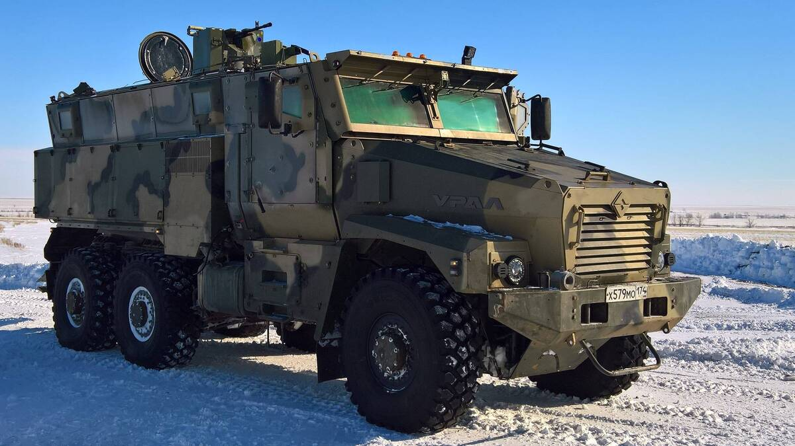
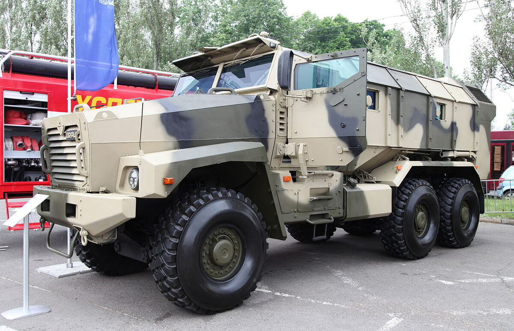

Вернуться на главную
Урал-63095 «Тайфун-У» —
российский многофункциональный, модульный бронеавтомобиль семейства «Тайфун». Шасси
автомобиля капотное, рамное, полноприводное, трёхосное. Производится на Уральском
автомобильном заводе, индекс «У» означает «уральский».
История создания:
Урал-63095 «Тайфун-У» — часть семейства «Тайфун», в разработке которого участвовали
более 120 предприятий, среди которых Ярославский моторный завод, НИИ стали, Федеральный
ядерный центр в Сарове, «Магистраль» (производитель бронестёкол) и другие.
Первые подробные сведения о проекте «Тайфун-У» появились в 2011 году. Бронемашины
продемонстрировали министру обороны Анатолию Сердюкову в июне 2011 года на полигоне
Научно-исследовательского испытательного центра ЦНИИ Минобороны РФ.
Вооружение машины:
Может быть оснащён дистанционно управляемым боевым модулем. Экипаж и десант могут вести
огонь из стрелкового оружия через бойницы. Возможные пулеметы для дистанционно
управляемого боевого модуля пулемёт ПКТ, пулемёт «Утёс», пулемёт «Корд».
Бронирование машины:
Транспортное средство оснащено разнесённой комбинированной навесной бронёй, изготовленной
из стали и керамики. Оно обеспечивает всеракурсную защиту от бронебойных пуль калибра
14,5 мм и защищает от подрыва до 8 кг взрывчатки под днищем. Также предусмотрена
противоминная защита от мощных самодельных взрывных устройств и фугасов. В конструкции
используется специальный сплав с керамическим наполнителем и бронестёкла, разработанные
в НИИ Стали. V-образное днище эффективно рассеивает взрывную волну, а
антитравматические кресла, подвешенные к стенам и потолку и оснащённые подножками,
помогают предотвратить передачу ударной волны на ноги через пол.
Мобильность машины:
Боевая масса — 26,5 тонн
Мощность двигателя — 450 л.с.
Скорость по шоссе — 110 км/ч
Скорость по пересечённой местности — 90 км/ч
Запас хода по шоссе — 1800 км
Запас хода по пересечённой местности — 1500 км
Ёмкость топливных баков — 420 л
Удельная мощность — 17 л.с./т
Преодолеваемый подъём — 60°
Преодолеваемая стенка — 0,6 м
Преодолеваемый ров — 0,6 м
Преодолеваемый брод — 1,8 м
Некоторые модификации машины:
Урал-63099 «Тайфун-У» —
капотный однообъёмный автомобиль для перевозки личного состава. Может перевозить до
12 человек, высадка десанта осуществляется через дверь.
Эксплуатанты машины:

Синий — действующие эксплуатанты.
Фотографии машины:
Изображение |
Модификация |
|  |
Урал-63095 «Тайфун-У» |
|  |
Урал-63099 «Тайфун-У» |